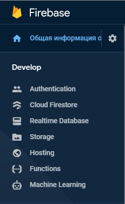
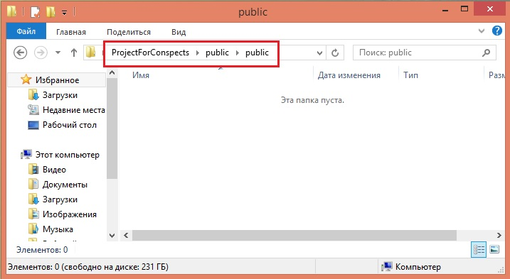
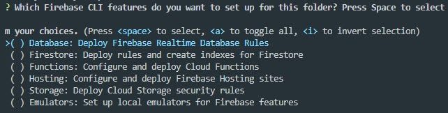
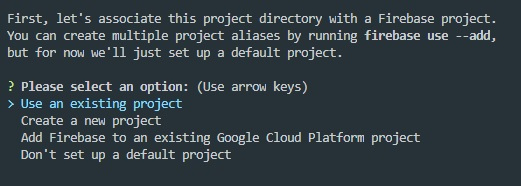
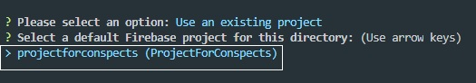
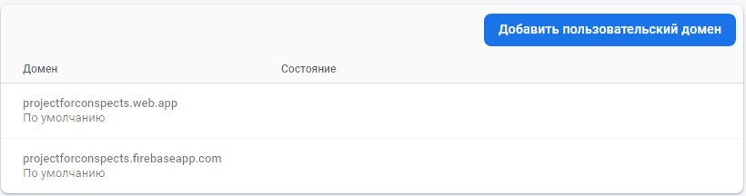

Для того что бы создать новый поект, заходм в консоль FireBase и жмем кнопку Create a New Project. Вводим имя нашего проекта и жмем продолжить. После этого откроется страница с настройками GOOGLE Аналитика. Ставим CheckBox "Отключить" и жмем кнопку "Создать проект"
После того как проект создастся, мы увидим боковую панель
В боковой панели выбираем элемент Hosting и справа в центральной части окна жмем кнопку Начать. Откроется инструкция с описанием того, что нужно сделать что бы создать репозиторий на локальном компьютере для работы с хостингом.
Создаем папку с произвольным именем, в ней создаем папку с именем public, затем в этой папке создаем еще одну и так же называем ее public. В итоге получится вот такая картина
После этого запускам VS Code из этой директории и открываем консоль. Первое что нам надо сделать, это установить FireBase. Для этого в консоли вводим команду:
npm install -g firebase-tools
Теперь необходимо авторизоваться. Для этого в той же консоли вводим команду:
firebase login
Откроется браузер со страницей выбора учетной записи Google, выбираем учетку и жмем кнопку "Разрешить". После получаем уведомление о том, что все прошло успешно.
Теперь необходимо проинициализировать проект, для этого в терминале вводим команду:
firebase init
Откроется приветственное сообщение FireBase с вопросом "Are you ready to proceed?", вводим Y и жмем Enter. Далее откроется вот такой текст:
Здесь необходимо выбрать роли нашего проекта, пока нам нужен только ХОСТИНГ, поэтому клавишей "стрелкой" перемещаемся в низ до элемента hosting и для того что бы выбрать роль жмем "spase", после чего жмем ENTER
Следующим этапом нам необходимо указать, что это за проект.
Выбираем Use an existing project т.к. в FireBase мы уже создали проект. Жмем Enter и видим что система предложила выбрать проект который уже находится у нас в FireBase
Выбираем его и жмем Enter
Далее система спросит у нас хотим ли мы использовать нашу директорию в качестве public, жмем Enter. После этого система спросит нужно ли генерировать файл index.html? Жмем N и ENTER. После этого появится сообщение о том что инициализация выполнена успешно.
Посе того как проект был проинициализировал, в папке с проектом создаем все необходимы файлы после чего в консоле вводим команду
firebase deploy
Каждый раз когда понадобится запушить данные на сайт вводим эту команду.
Для того что бы посмотреть какой теперь у нас адрес нашего хостинга, заходим в консоль проекта и так же жмем Hosting. В разделе мы увидим вот такую картину:
Иными словами fireBase нам предоставляет аж две ссылки на наш сайт. Так же мы можем привязать к нашему хостингу пользовательский домен, т.е. можно сделать красивую ссылку.